Planificador de medicación imprimible
Del papelito de la nevera a un plan claro para cada día
Diseñamos un planificador de medicación en PDF, pensado para generarse desde una app de salud pública, para que las personas mayores y sus cuidadores pudieran tener su tratamiento siempre a la vista, en papel.
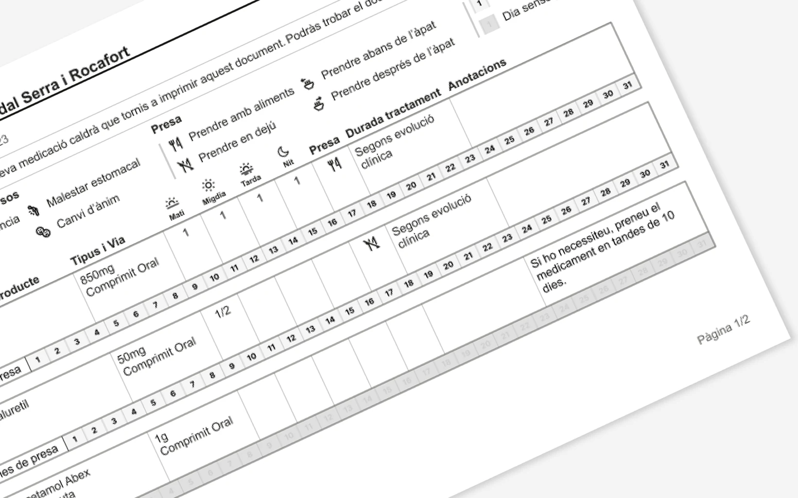
Resumen
- Problema
- Muchas personas mayores organizan su medicación con notas hechas a mano. Es fácil equivocarse, y más cuando se toman varios medicamentos.
- Mi papel
- Diseñar el planificador, partiendo de lo aprendido en las entrevistas de otro proyecto de medicación.
- Solución
- Un PDF en blanco y negro, en A4 apaisado, con una fila por medicamento pensada para mostrar de un vistazo cuánto tomar en cada momento del día y en qué días del mes, con iconos para la forma de tomarlo y los avisos importantes.
- Resultado
- Un planificador que muestra la medicación, su posología, los efectos adversos y otras indicaciones en un documento imprimible.
Contexto
La app permite a la ciudadanía consultar su medicación, pero buena parte de las personas mayores sigue confiando en el papel. En las entrevistas de otro proyecto de medicación, con pacientes y cuidadores, apareció una y otra vez la misma expresión: «el papelito de la nevera». Varias de las personas entrevistadas se hacían su propio esquema a mano y lo colgaba en la nevera para no olvidar ninguna toma.
De ahí nació la idea de partir de ese papel para facilitar la toma de la medicación, también cuando es compleja, y mejorar así la adherencia al tratamiento. Un planificador que se generaría automáticamente en la sección de medicación de la app, listo para imprimir.
El reto
Diseñar un documento que cualquier persona entendiera sin explicaciones, con condiciones muy concretas:
- Que fuera accesible: blanco y negro, porque se imprime en casa, con alto contraste y el texto principal en Arial a 12 puntos.
- Vista mensual, con espacio para anotaciones.
- Una sola página hasta cuatro medicamentos, para poder colgarla en la nevera.
- Que fuera escalable, para personas con muchos medicamentos y tomas distintas.
El objetivo de fondo era la adherencia al tratamiento: que la gente tome su medicación como le corresponde.
Momentos clave
-
Escuchar cómo se organiza la gente de verdad
En otro proyecto de medicación entrevistamos a pacientes y a cuidadores para entender cómo gestionaban su medicación. En paralelo, mantuve conversaciones informales con profesionales de enfermería y farmacia para entender el lado clínico. Uno de los hallazgos más interesantes fue el papelito de la nevera: la solución tenía que parecerse a lo que la gente ya hacía, no a una app.
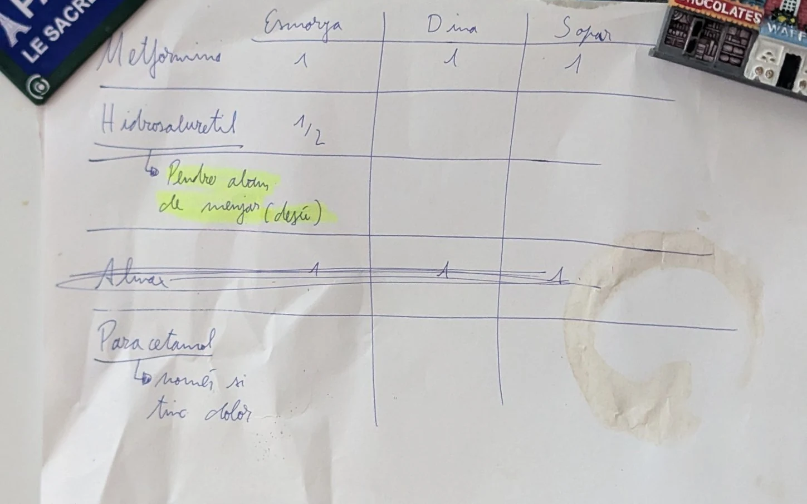
Esquema hecho a mano en una nevera También miramos cómo se organiza hoy la medicación en objetos cotidianos: pastilleros semanales, plantillas imprimibles que se encuentran en internet y las propias cajas de los medicamentos. Las plantillas organizan el día por momentos o por comidas, casi siempre con tablas en blanco que hay que rellenar a mano. Las cajas ya incluyen un espacio para anotar la posología y, en algunas, iconos con los momentos del día en que tomarla. Y el pastillero que miramos divide el día en mañana, tarde y noche, en lugar de en horas. Dos de esas ideas están en el planificador: una columna de anotaciones y los momentos del día.
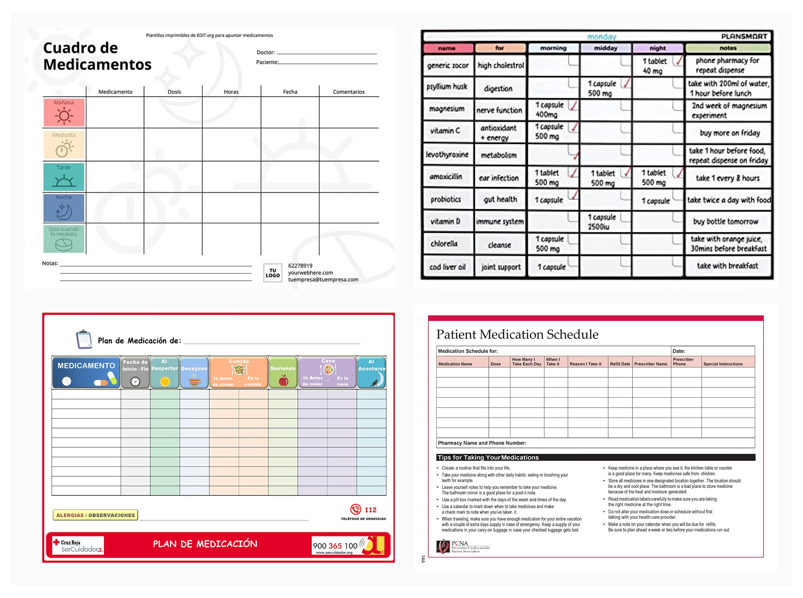
Plantillas de medicación que se encuentran en internet. Fuentes: EDIT.org, PLANSMART, Cruz Roja (SerCuidador) y PCNA 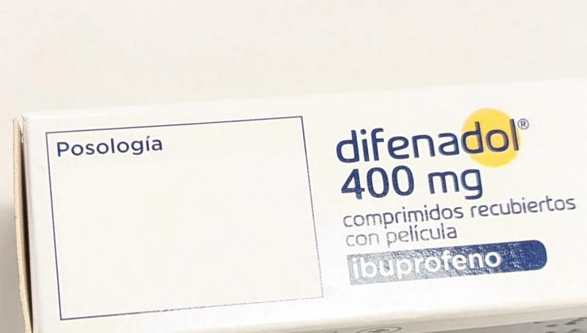
Una caja con un recuadro en blanco para anotar la posología 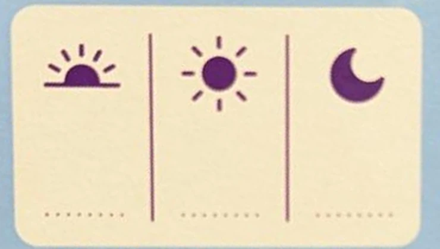
Otra caja con los momentos del día y líneas para anotar la dosis -
Las restricciones como punto de partida
El blanco y negro, el A4 y la accesibilidad no eran limitaciones, eran el diseño. El texto principal va en negro sobre blanco y en Arial a 12 puntos. Cada elemento tenía que ganarse su espacio en la hoja.
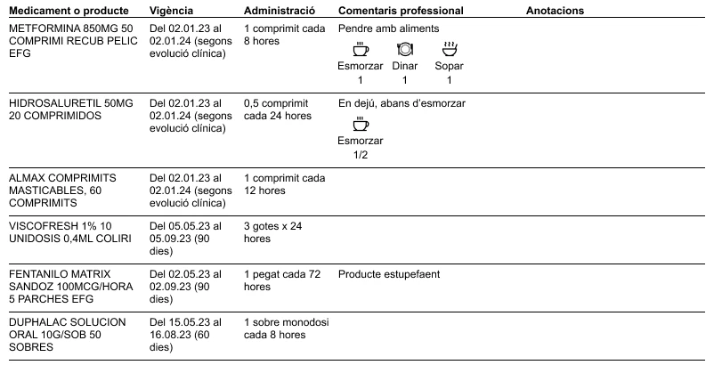
Primera versión: tabla por columnas, en blanco y negro y A4 apaisado -
Entender el día de un vistazo
Cada medicamento ocupa una fila horizontal con todo lo que hay que saber: nombre, tipo y vía de administración, cuánto tomar, cómo tomarlo, duración del tratamiento y un espacio para anotaciones.
La primera versión situaba las tomas en torno a las comidas. En la propuesta final no usamos horas exactas, porque no se sabe a qué hora toma realmente cada persona su medicación: el día se divide en cuatro momentos (mañana, mediodía, tarde y noche), cada uno con su icono y su cantidad. Otro icono indica cómo tomarlo (con alimentos, en ayunas, antes o después de la comida) y otros avisan de efectos adversos, como la somnolencia o la fatiga. Todos llevan su leyenda escrita, para no depender solo del dibujo.
Debajo de cada fila, una tira con los días del mes marca en cuáles toca tomarlo; los días sin toma se muestran en gris claro, como deshabilitados. Sirve sobre todo para pautas poco habituales, como un parche que se cambia cada tres días.
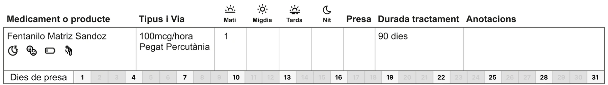
Los cuatro momentos del día y la tira de días de toma de un medicamento 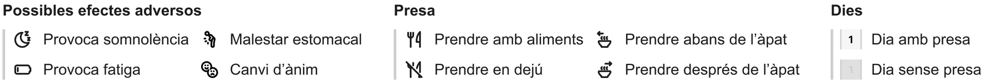
Leyenda: efectos adversos, forma de tomar y días de toma -
Muchos medicamentos, varias formas de organizarlos
Exploramos varios enfoques. Uno repartía la información en dos hojas: una tabla de medicamentos y un calendario del mes con un círculo numerado por cada medicamento del listado, repetido en cada día. El que defendimos junta en una fila toda la pauta de cada medicamento, en formato horizontal. Funcionaba mejor porque cada medicamento lleva mucha información, y el formato apaisado permite mostrarla sin comprimirla.
No era posible que cupiera todo en una hoja: a partir de cuatro o cinco medicamentos hacía falta más de una. Por eso el diseño se pensó para extenderse a varias páginas, con el encabezado de la tabla repetido y las páginas numeradas.
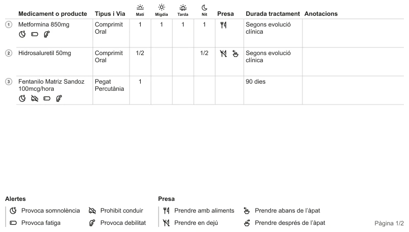
Alternativa de varias páginas, hoja 1: tabla con los medicamentos numerados 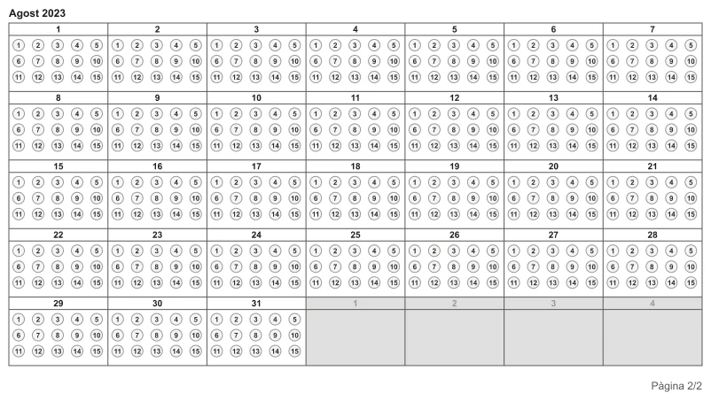
Alternativa de varias páginas, hoja 2: calendario del mes con un círculo por medicamento
La solución
El planificador final es una hoja A4 apaisada que se extiende a las páginas necesarias según el número de medicamentos. Con todos los requisitos, no había forma de que todo cupiera en una sola página, porque hay personas polimedicadas con más de 12 medicamentos.
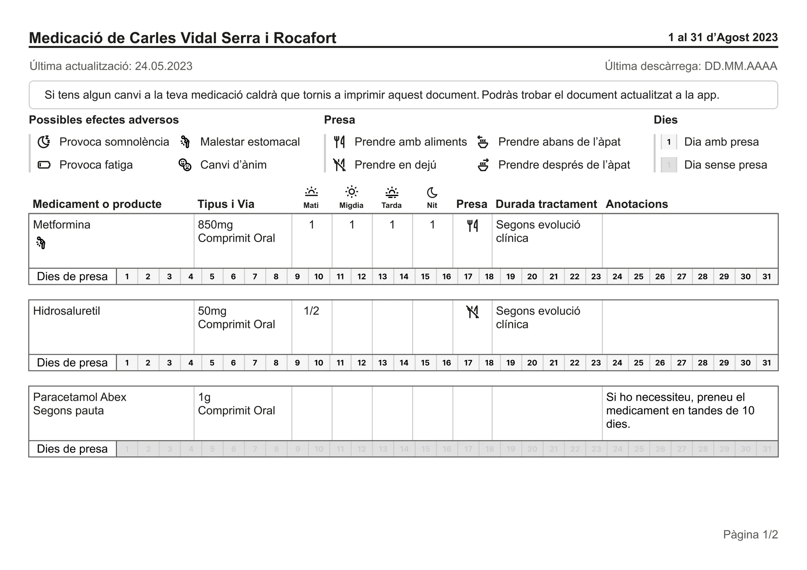
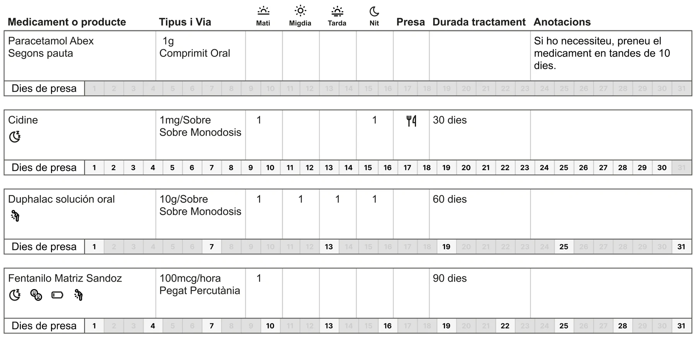
Validación y resultados
- El diseño se basó en lo que aprendimos en las entrevistas con pacientes y cuidadores de otro proyecto de medicación.
- Los requisitos cambiaron por el camino. Al compartirse con más responsables del ámbito sanitario, el proyecto creció en alcance y la restricción de una sola página pasó a ser «las hojas necesarias», también para personas polimedicadas. Por motivos de gestión tuve que centrarme en otro proyecto y el planificador siguió por otro camino.
- La propuesta que defendimos, la de formato horizontal, no llegó a implementarse ni a probarse impresa con usuarios, y no se diseñó la pantalla de la app desde la que se genera el PDF.
- Creemos que llegamos a una muy buena solución, pero por motivos ajenos al diseño el proyecto no siguió como teníamos previsto.
Aprendizajes
- Simplificar no siempre es quitar información: a menudo es elegir cómo mostrarla. Dividir el día en cuatro momentos, en lugar de horas exactas, buscaba que la hoja fuera más fácil de leer sin recortar información.
- Diseñar para papel obliga a priorizar como pocas cosas: no hay scroll, ni interacción, ni color.
- Lo que haríamos diferente: probar versiones impresas con pacientes y cuidadores desde el principio, aunque fuera de forma sencilla, para defender las decisiones con evidencia cuando cambiaron los requisitos.